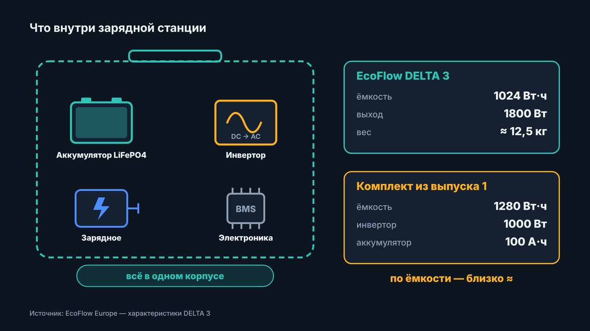
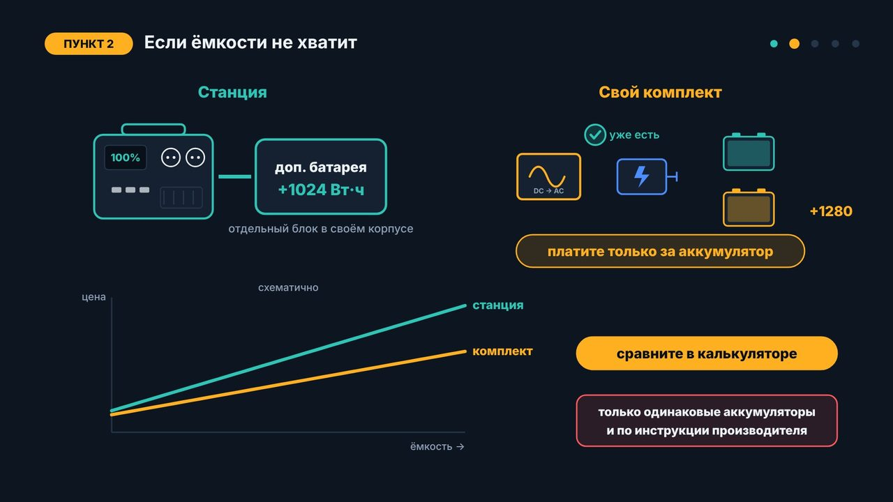

Зарядная станция или свой комплект: что выгоднее
В выпуске 1 мы посчитали комплект: аккумулятор LiFePO4 на 100 А·ч, инвертор на 1000 Вт, зарядное и предохранитель. Рядом в магазине стоит готовая зарядная станция. Сравниваем по пяти пунктам и выводим простое правило выбора.
Ролик, 5:14. Не открывается? Смотреть на YouTube или читайте разбор ниже — в нём всё то же самое.
Впишите цены своего магазина — калькулятор сравнит цену за ватт-час и время зарядки.
Открыть калькуляторЧто внутри станции
Тот же набор, что и в комплекте: аккумулятор LiFePO4, инвертор, зарядное устройство и электроника, которая всем управляет. Только всё собрано в одном корпусе. Для примера — EcoFlow DELTA 3: 1024 Вт·ч, выход 1800 Вт, вес около 12,5 кг. Комплект из выпуска 1 — 1280 Вт·ч и инвертор на 1000 Вт. По ёмкости они близки.

1Цена за ватт-час
Цены меняются каждую неделю и в каждой стране свои, поэтому вместо цифр — способ. Сравнивайте не цену коробки, а цену одного ватт-часа.
У станции ёмкость в ватт-часах написана в паспорте. У аккумулятора часто пишут ампер-часы — умножьте их на напряжение: 100 А·ч × 12,8 В = 1280 Вт·ч. Для комплекта складывайте всё: аккумулятор, инвертор, зарядное, предохранитель, провода и клеммы — и делите на ёмкость аккумулятора. На небольшой ёмкости разница обычно невелика: и там, и там вы платите за инвертор и зарядное.
2Расширение
Станцию расширяют фирменной дополнительной батареей; для DELTA 3 это ещё 1024 Вт·ч — отдельный блок в своём корпусе. В комплект добавляют второй такой же аккумулятор: инвертор и зарядное уже есть, платите только за аккумулятор. Поэтому каждый следующий киловатт-час в комплекте обычно дешевле. Соединяйте только одинаковые аккумуляторы и так, как разрешает инструкция производителя.

3Скорость зарядки
Если свет отключают по графику, важно, успеет ли система зарядиться, пока свет есть. DELTA 3 берёт из розетки до 1500 Вт и заряжается до 100 % за 56 минут. Зарядное на 20 А заряжает аккумулятор на 100 А·ч примерно за 5 часов, два таких аккумулятора — около 10 часов.
Можно поставить зарядное мощнее: аккумулятор LiTime на 100 А·ч допускает ток заряда до 100 А, хотя производитель рекомендует 20 А.

4Переключение при отключении
Станция работает как источник бесперебойного питания: у DELTA 3 заявлено переключение быстрее 10 мс. Обычный инвертор сам не переключается: например, к Victron Phoenix производитель предлагает отдельный автоматический переключатель Filax (быстрее 20 мс). Без него вилки придётся переставлять вручную. Третий путь — инвертор с зарядным и встроенным переключателем, как Victron MultiPlus, но это другой класс устройств и другая цена.

5Гарантия и ремонт
На DELTA 3 производитель даёт 5 лет гарантии; всё собрано и защищено, ошибиться при сборке невозможно. Но после гарантии поломка инвертора внутри — это сервис или замена станции целиком. В комплекте у каждой части своя гарантия: сломался инвертор — меняете только его. Зато сборка — на вас.
Правило выбора
| Зарядная станция | Свой комплект | |
|---|---|---|
| Когда брать | до 1–2 кВт·ч, свет дают ненадолго, хочется без проводов | нужна большая ёмкость, отключения длинные, есть время на сборку |
| Сильная сторона | заряжается примерно за час, переключается сама | следующий кВт·ч обычно дешевле, детали меняются по одной |
Источники
- EcoFlow Europe — DELTA 3: 1024 Вт·ч, 1800 Вт, ≤ 12,5 кг, заряд от сети 1500 Вт за 56 мин, UPS < 10 мс, гарантия 5 лет.
- EcoFlow Europe — дополнительная батарея DELTA 3: +1024 Вт·ч.
- LiTime — аккумулятор 12 В 100 А·ч: 1280 Вт·ч, ток заряда до 100 А, рекомендовано 20 А.
- Victron Energy — даташит Phoenix 180–1200 VA: отдельный переключатель Filax, < 20 мс.
- Victron Energy — MultiPlus: встроенный переключатель и функция UPS.
Проверено 14 ноября 2026 г. Нашли ошибку — напишите в комментариях под роликом.